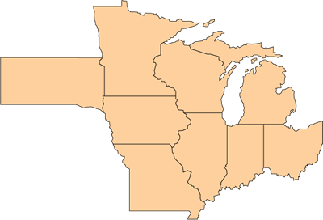
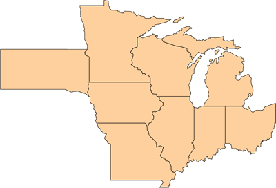

State & Regional Climate Information
Click on the states below to find climate facts specific to various regions within each state...


Click on the states below to find climate facts specific to various regions within each state...

Join the latest discussion. Get the very latest information on our field trials and weather outlook for the Corn Belt.